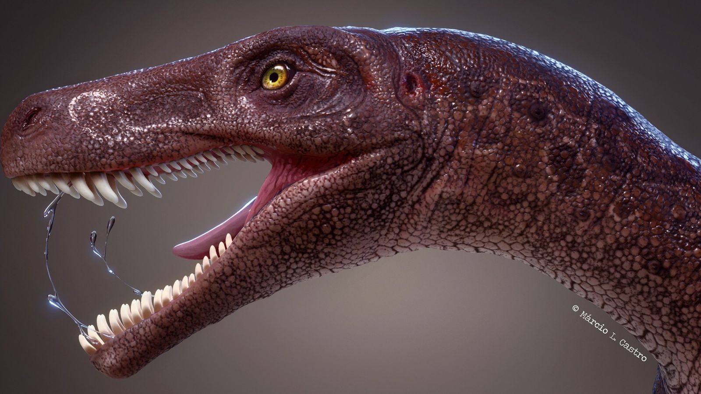

Herbivoros
Los dinosaurios herbíboros son altos o tienen cuellos robustos para alcanzar las ramas de los árboles. En general tienen dientes y en ocasiones pico, pero son de digestión lenta y se pasan el día comiendo. Entre las especies destaca el diplodocus, el Mamenquisario, el Stegousario, el Anquilosaurio, el Brontosario y el Braquiosario, entre otros.
CARACTERÍSTICAS DE LOS DINOSAURIOS HERBÍVOROS
Antes de confundir que el aspecto feroz de muchos de los dinosaurios de la prehistoria nos lleve a pensar que eran carnívoros, cabe señalar que la gran mayoría de ellos eran herbívoros y que de hecho algunas especies son tal altos o tenían el cuello muy desarrollado de modo que pudieran llegar a las ramas más altas de los árboles y de la vegetación. Es por ello que destacaban más en tamaño e imponían incluso frente a otras especies carnívoras que se alimentaban de sus presas o de la carroña.
Carnivoros

Los dinosaurios carnívoros, pertenecientes al grupo de los terópodos, eran los mayores depredadores del planeta. Caracterizados por sus afilados dientes, mirada penetrante y temibles garras, algunos cazaban en solitario mientras que otros lo hacían en manada. Así mismo, dentro del gran grupo de dinosaurios carnívoros, existía una escala natural que clasificaba en la cima a los depredadores más feroces, los cuales podían alimentarse incluso de otros carnívoros más pequeños, y dejaba las posiciones inferiores para los carnívoros que se alimentaban de otros dinosaurios más pequeños (principalmente dinosaurios herbívoros), de insectos o de peces.
CARACTERÍSTICAS DE LOS DINOSAURIOS CARNIVOROS
Antes de nada, cabe destacar que no todos los dinosaurios carnívoros eran enormes y temibles, puesto que la arqueología ha demostrado que también existieron depredadores de menor tamaño. Eso sí, todos ellos tenían algo en común: eran ágiles y muy veloces.